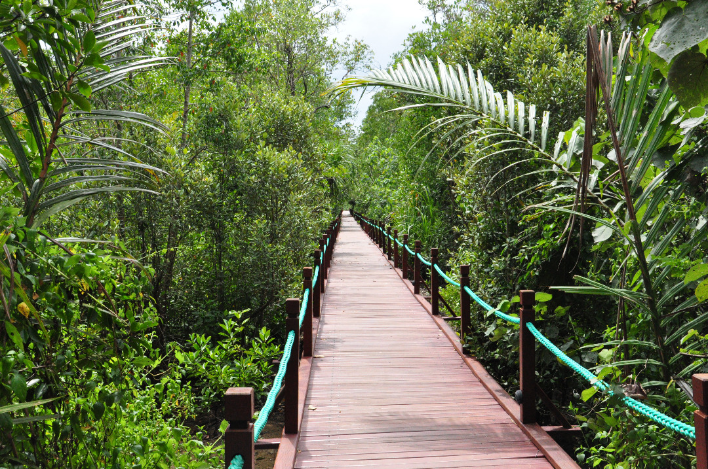
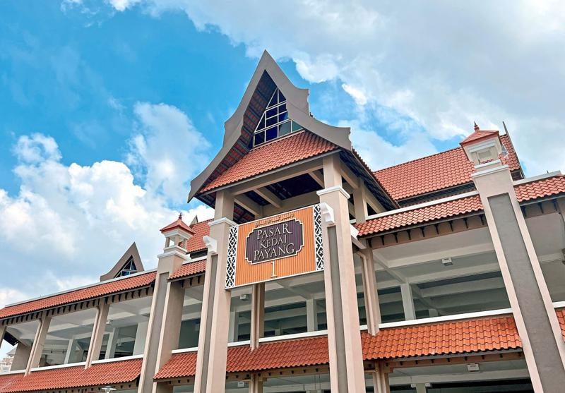

Terengganu
Terengganu, located on the east coast of Peninsular Malaysia, is known for its stunning beaches, rich cultural heritage, and traditional Malay architecture. It's a state where modernity harmoniously blends with tradition, offering visitors a glimpse into Malaysia's diverse cultural tapestry. Terengganu promises an unforgettable experience for travelers seeking both relaxation and adventure.
Attractions

Setiu Wetlands
Setiu Wetlands, located in the Setiu district of Terengganu, Malaysia, is a biodiverse ecosystem comprising mangrove forests, wetlands, and coastal areas. This pristine natural habitat is recognized for its ecological significance and serves as a sanctuary for numerous species of flora and fauna. Covering an area of approximately 23,000 hectares, Setiu Wetlands is home to a rich variety.......
13, Jln Pengkalan Gelap, 22120 Permaisuri, Terengganu
09:00a.m – 04:00p.m
13, Jln Pengkalan Gelap, 22120 Permaisuri, Terengganu
09:00a.m – 04:00p.m

Pasar Payang
Pasar Payang, situated in the heart of Kuala Terengganu, Malaysia, is a vibrant and bustling traditional market that encapsulates the essence of Terengganu's culture and heritage. This iconic market has been a focal point of the city for generations, attracting locals and tourists alike with its colorful array of goods and lively atmosphere. At Pasar Payang, visitors can immerse themselves.......
Jalan Sultan Zainal Abidin, Kampung Tanjung Kapur, 20200 Kuala Terengganu, Terengganu
07:00a.m – 06:00p.m
Jalan Sultan Zainal Abidin, Kampung Tanjung Kapur, 20200 Kuala Terengganu, Terengganu
07:00a.m – 06:00p.m

Terengganu State Museum
The Terengganu State Museum, located in Kuala Terengganu, Malaysia, is one of the largest museums in the country dedicated to preserving and showcasing the rich cultural heritage of Terengganu state. Established in 1976, the museum is housed in a modern building complex that reflects traditional Malay architectural elements, offering visitors an immersive experience into the history, art, and culture of the region. The museum's extensive collection spans various disciplines.......
Terengganu State Museum, 20566 Bukit Losong, Terengganu
09:00a.m – 05:00p.m
Terengganu State Museum, 20566 Bukit Losong, Terengganu
09:00a.m – 05:00p.m